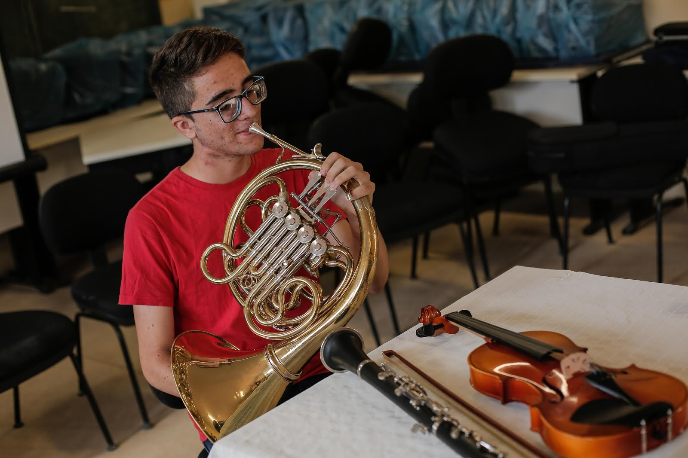
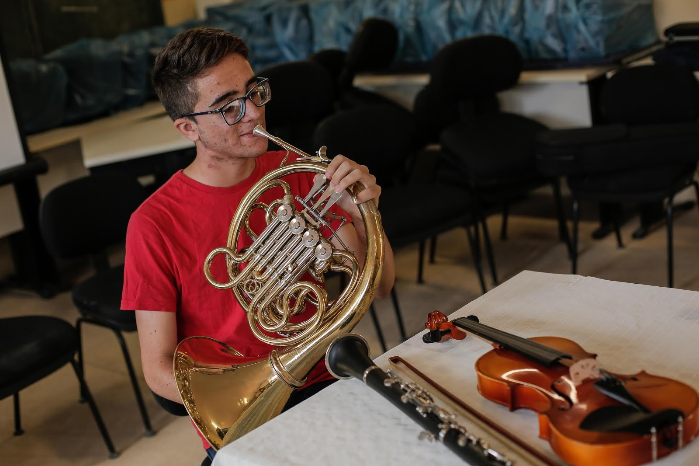

O que é o Programa Ganhe o Mundo Musical
Os(as) estudantes selecionados(as), quando convocados(as)(as) pela Secretaria de Educação, cursarão 01 (um) semestre letivo do ensino médio na modalidade High School e treinamento prático no instrumento musical ou canto para o qual foi selecionado(a) possibilitando(a) o desenvolvimento de sua comunicação para treinar, conhecer e aperfeiçoar suas habilidades. A participação em um intercâmbio internacional dará ao estudante além do desenvolvimento na língua estrangeira, a oportunidade de continuar o aperfeiçoamento da prática em seu instrumento musical ou canto, além de promover e fomentar a diversidade e difusão cultural. Para ser direicionado para portal do Programa Ganhe o Mundo Musical Clique aqui.

Secretaria de Educação
Programa Ganhe o Mundo
Quem somos

Banda PGM
1ª Edição Programa Ganhe o Mundo Musical